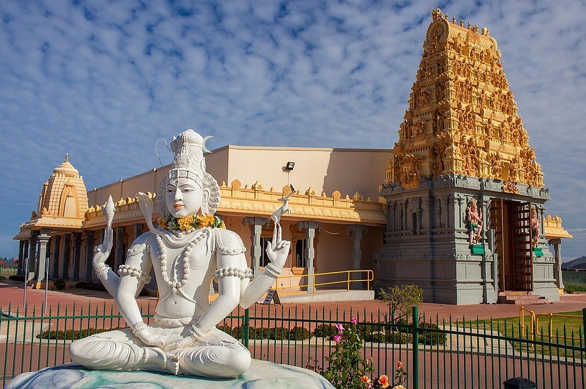

TEMPLE
The Most Beautiful Place In Universe
Mahabaleshwar Temple, Gokarna
Directions WikipediaThe Mahabaleshwar Temple, Gokarna is a 4th-century CE Hindu temple located in Gokarna, Uttara Kannada district, Karnataka state, India which is built in the classical Dravidian architectural style. It is a site of religious pilgrimage. The temple faces the Gokarna beach on the Arabian Sea in which Hindu pilgrims cleanse before visiting the temple for worship.

Quick Facts about Mahabaleshwar Temple, Gokarna
- Main Deity: Lord Mahabaleshwar (Lord Shiva)
- Best Time to Visit: October to March
- Temple Timings: 6 am to 12 pm. 5 pm to 8 pm)
- Festivals: Maha Shivratri
- Addresss: Koti Teertha Road, Kotiteertha, Gokarna, Uttara Kannada, Pin Code-581326.